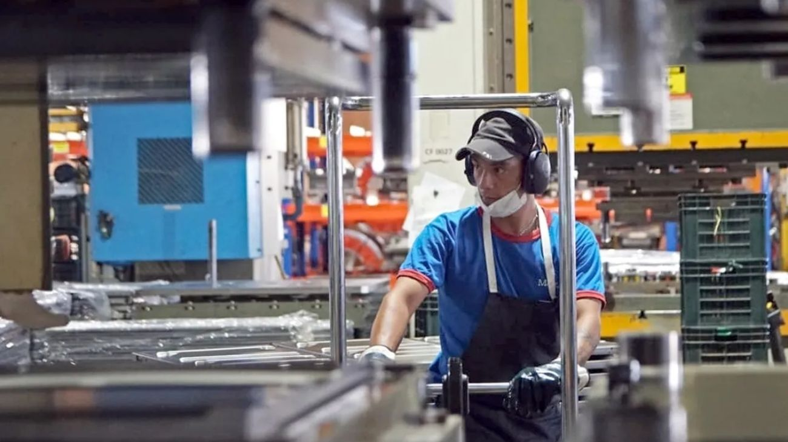

La actividad económica cayó 2,1% en febrero: industria y comercio arrastran al indicador pese al boom exportador
El EMAE de febrero rompió la tendencia positiva de enero y registró la mayor caída mensual desde diciembre de 2023, revelando una economía que crece en el campo y la energía pero se contrae en las ciudades.

El Estimador Mensual de Actividad Económica (EMAE) de febrero de 2026 publicado por el INDEC arrojó una caída del 2,1% interanual y un retroceso del 2,6% en la medición desestacionalizada respecto a enero, la baja mensual más pronunciada desde diciembre de 2023. El resultado interrumpe la señal positiva que había dejado enero, cuando la actividad había crecido 1,9% interanual y 0,4% mensual, y deja el acumulado del primer bimestre en terreno levemente negativo: -0,2% frente al mismo período de 2025. El gobierno apunta al componente tendencia-ciclo, que avanzó un marginal 0,1% mensual, para sostener que la trayectoria subyacente de la economía sigue siendo expansiva, atribuyendo la baja puntual de febrero a dos días hábiles menos respecto al año anterior y al impacto de un paro general sobre la producción industrial y logística.
El dato más contundente del informe es la profunda brecha entre sectores. Por un lado, la explotación de minas y canteras creció 9,9% interanual traccionada por los récords de producción de petróleo y gas en Vaca Muerta, el agro avanzó 8,4% y la pesca marcó un salto extraordinario del 14,8%, acumulando 28,9% en el bimestre. Por el otro, la industria manufacturera se desplomó 8,7% interanual y el comercio cayó 7,0%, dos sectores que en conjunto restaron 2,2 puntos porcentuales al resultado total del índice. En contraste, el aporte sumado de la minería y el agro apenas alcanzó 0,8 puntos positivos, lo que ilustra matemáticamente por qué el crecimiento exportador no logra compensar la contracción urbana.
La situación del sector industrial es especialmente preocupante. En febrero, la utilización de la capacidad instalada cayó al 54,6%, frente al 58,6% del mismo mes del año anterior, lo que implica que casi la mitad de la infraestructura fabril del país permanece ociosa por falta de demanda interna. En el sector metalúrgico, ese porcentaje descendió al 41,8%. El mercado laboral refleja esta realidad: mientras el gobierno destaca la creación de 113.000 empleos en dos años, en ese mismo período se destruyeron 228.000 puestos formales en industria y construcción, reemplazados mayoritariamente por empleos precarios en plataformas de servicios. El salario real acumula seis meses consecutivos de caída y se ubica todavía un 7,9% por debajo de los niveles de noviembre de 2023.
De cara al resto del año, las proyecciones de los organismos internacionales se distancian del optimismo oficial. El FMI recortó su estimación de crecimiento para Argentina en 2026 del 4,0% al 3,5%, mientras que el Banco Mundial mantiene su proyección en 4,0% y el Relevamiento de Expectativas de Mercado del BCRA estima un 3,3%, todos lejos del 5% que contempla el Presupuesto oficial. Para que esos números se cumplan, marzo deberá mostrar un rebote muy fuerte que compense el bache de febrero, y los primeros datos del frente externo apuntan en esa dirección: las exportaciones de ese mes marcaron un récord histórico de US$8.645 millones con un superávit comercial de US$2.523 millones. La gran pregunta que dejó febrero es si ese dinamismo exportador puede eventualmente derramar sobre el consumo interno, o si la Argentina de 2026 seguirá siendo, en la práctica, dos economías que conviven sin tocarse.